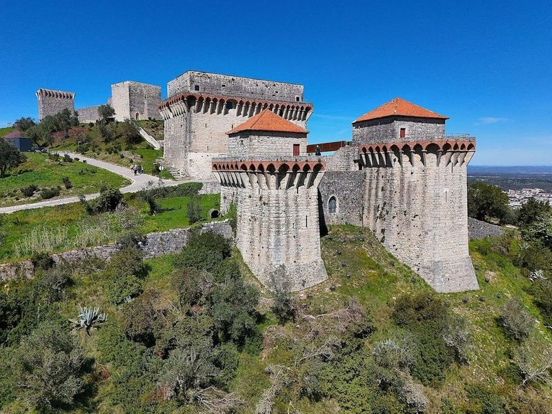
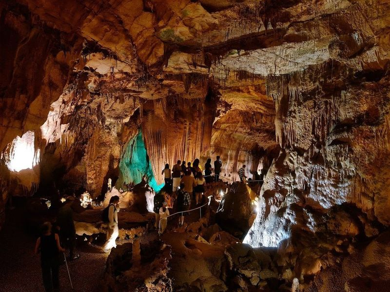
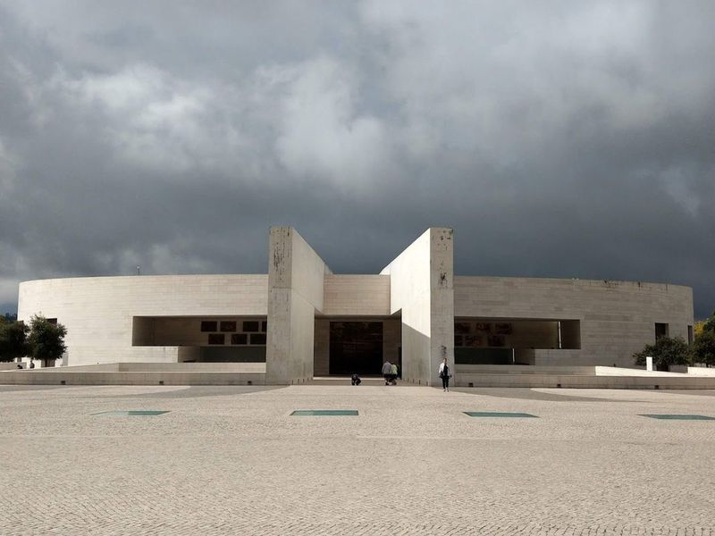
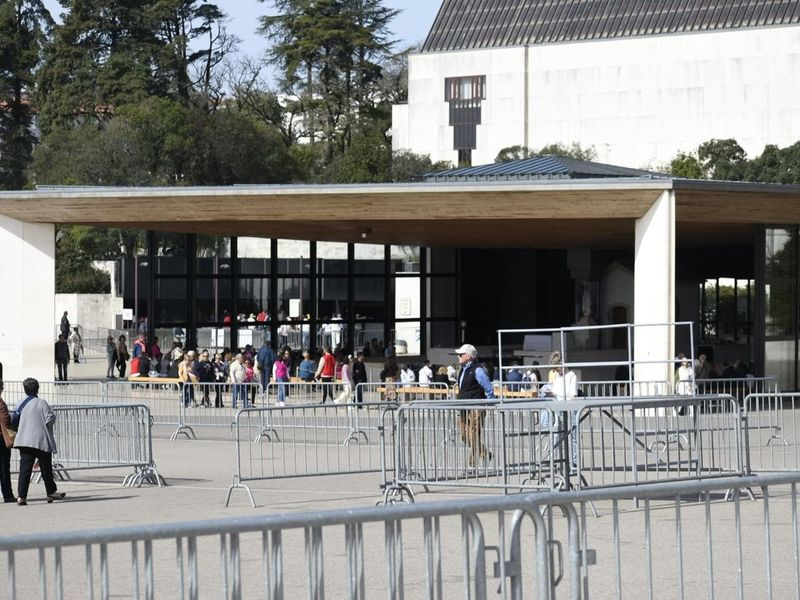
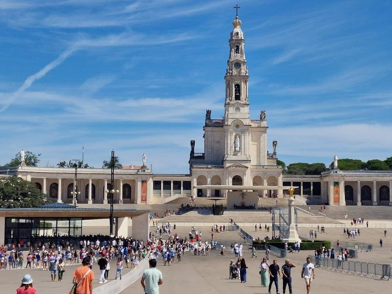
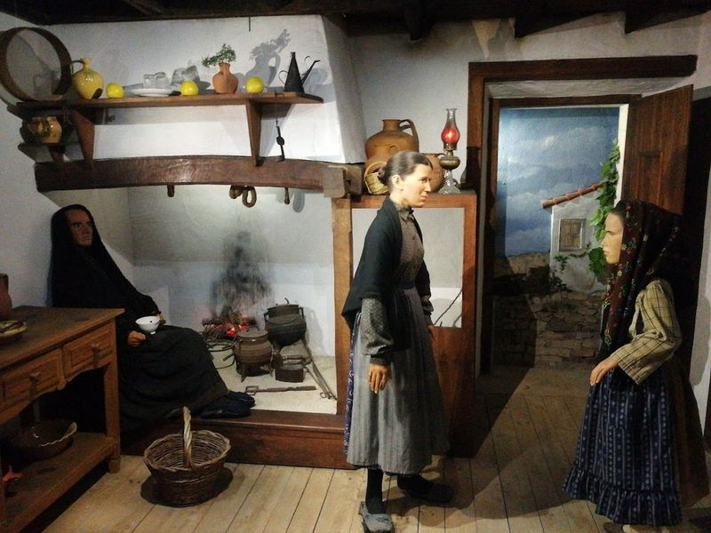
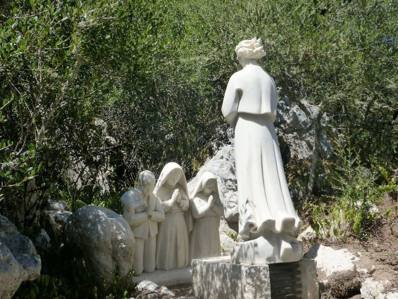
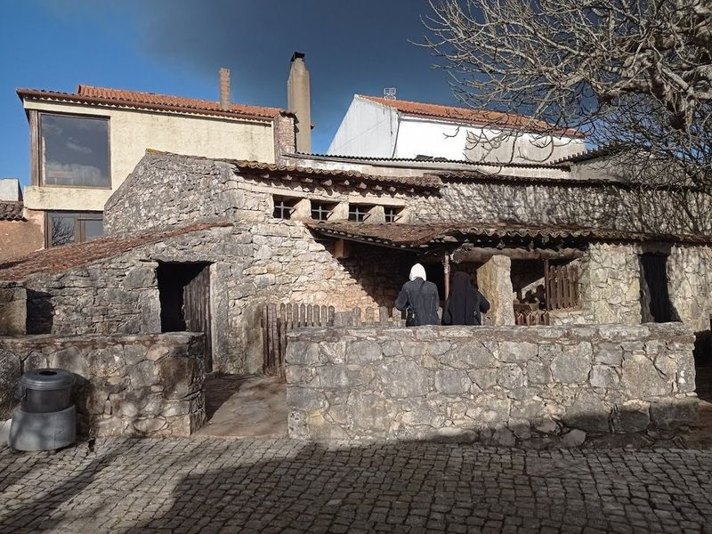
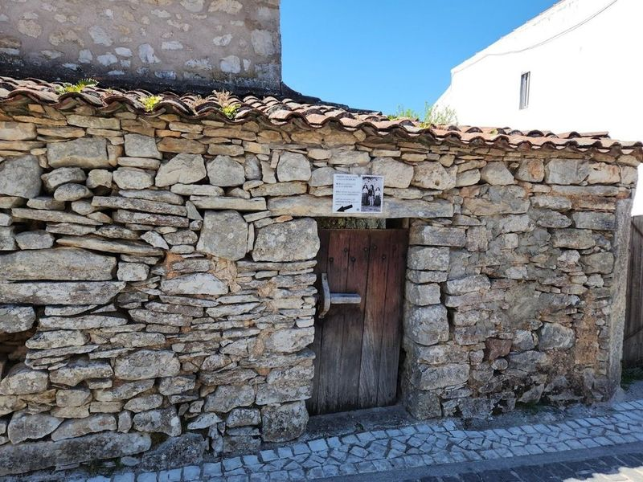
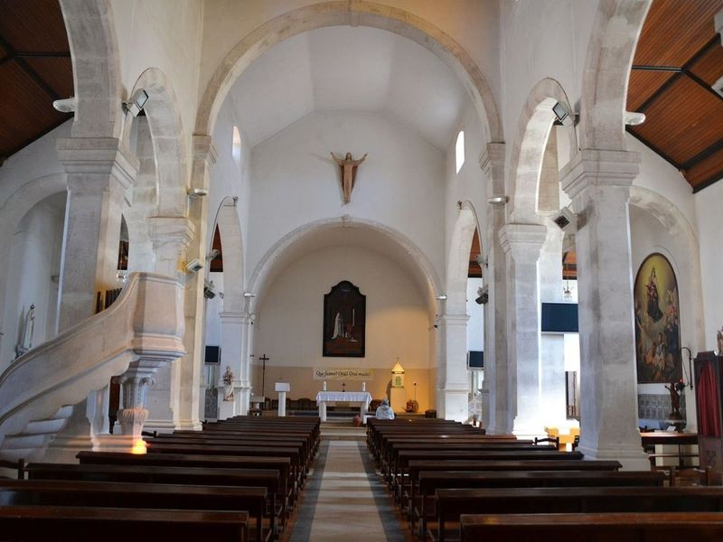

Explore Fátima
A Brief History
Fátima was a small serra village until reported apparitions of the Virgin Mary to three shepherd children in 1917 transformed it into one of Catholicism's principal pilgrimage destinations. The basilicas, colonnaded prayer esplanade, and chapels of the Apparitions rose through the twentieth century as millions arrived on foot and by road. While the surrounding heathland still recalls rural Estremadura, the planned sanctuary city records how modern Portuguese faith, dictatorship-era patronage, and international devotion reshaped this landscape.
Attractions Map
Top Sights & Activities

Castle of Ourem
Castle of Ourem, located in a small village, is a medieval hilltop fortress offering panoramic views of the surrounding area. The castle was rebuilt in the 15th century using Italian military architectural styles and stands as a national monument with great historical significance. Originally a Muslim fortification, it was reconquered from the Moors in 1136.

Mira de Aire Cave
The Limestone Caves in Mira de Aire are a magnificent natural wonder featuring stalactites, stalagmites, waterfalls, and an underground lake. The caves have been expertly preserved and maintained with atmospheric lighting that enhances the beauty of the attraction. At the end of the trail is a spacious deck suitable for ceremonies such as weddings or parties.

Basilica of the Most Holy Trinity
The Basilica of the Most Holy Trinity is a modern basilica located at the Sanctuary of Our Lady of Fátima in Portugal. It was built to accommodate large services and is a significant site for Catholic pilgrims, attracting over 5 million travellers annually. The basilica honors the appearance of the Virgin Mary to three children in 1917. Its construction began in 2004 and was completed in 2007, coinciding with the 90th anniversary of the Apparitions.

Chapel of the Apparitions
The Chapel of the Apparitions is a significant pilgrimage site and chapel built in 1919, dedicated to the apparitions of the Virgin Mary. Located in Fatima, Portugal, it is a major Catholic sanctuary visited by over 5 million people annually. The main Sanctuary Square, where the shrine is located, is twice the size of St Peter's Square in the Vatican. The chapel holds great religious importance as it is believed to be where the Virgin Mary appeared to three shepherd children.

Basilica of Our Lady of the Rosary of Fatima
The Basilica of Our Lady of the Rosary of Fatima is a significant religious site and pilgrimage destination in Portugal. It commemorates the appearance of the Virgin Mary to three children in 1917. The basilica features a tower and intricate reliefs, drawing millions of travellers annually. Located near Lisbon, it is considered one of the major Catholic sanctuaries globally.

Wax Museum of Fátima
The Wax Museum of Fátima is a must-visit attraction in the heart of Fátima, Portugal. It showcases a captivating tableau of the Marian apparition and other significant scenes from the town's history through lifelike wax figures. The museum also houses the Ethnographic Museum of Fátima, which offers a rich collection of artifacts and exhibits related to local culture and history, providing travellers with insight into the daily lives of people in Fátima over the centuries.

Way of the Little Shepherds
"Way of the Little Shepherds" is a pilgrimage site in Fatima, where three young shepherds witnessed apparitions in 1916 and 1917. Lucia de Jesus, Francisco Marto, and Jacinta Marto became known as the "Three Shepherds." travellers can experience a peaceful and meditative atmosphere with beautiful views. The site offers a serene environment for prayer and self-reflection, making it an ideal place for meditation.

Lucia's House
Lucia's House in Portugal is the birthplace and childhood home of Lucia de Jesus, one of the three children who encountered the Blessed Virgin Mary. Located in Aljustrel, near the Shrine of Fatima, this historic house has been transformed into a museum showcasing exhibits that depict peasant life. The backyard still features the fig trees where the young shepherds used to play and seek refuge from pilgrims and curious travellers. It was here that the first interrogations of the seers took place.

Francisco and Jacinta's House
Francisco and Jacinta's House holds historical significance as the birthplace of the young shepherds who reportedly witnessed apparitions of the Lady of the Rosary in Fatima, Portugal. The house, located just 200 meters from Lucia's residence, was acquired by the Shrine in November 1996 and subsequently reconstructed. This site is a key pilgrimage destination for those interested in the events that unfolded during May to October 1917.

Parish Church of Fatima
The Parish Church of Fatima is a significant part of the Sanctuary, which has been drawing pilgrims from around the globe since 1917. It holds historical importance as it was where Francisco and Jacinda were baptized. The church features a simple yet lovely design with a beautiful main altar and side chapels, along with a charming baptismal font. travellers have described feeling an incredible energy within this small chapel.